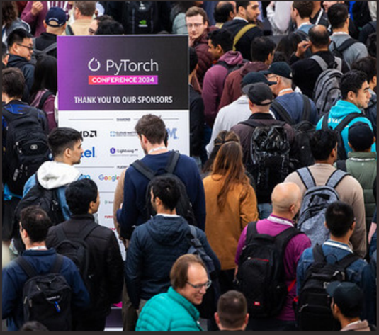
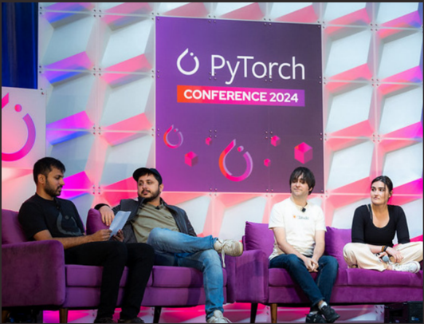
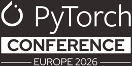
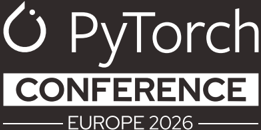
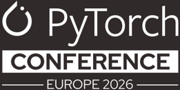

7-8 April 2026 | Paris, France
2026 SPONSORSHIP PROSPECTUS

About PyTorch Conference
7-8 April 2026 | Paris, France
Don't miss your opportunity to shape the future of generative AI/ML! Join us at the PyTorch Conference Europe 2026, where collaboration, innovation, and progress intersect in the cutting-edge open source machine learning framework. This conference brings together leading researchers, developers, and academics, facilitating collaboration and pushing forward end-to-end machine learning.


'This was hands-down one of the best organized and most enjoyable conferences I've been to in the last many years.'
'There is a reason why I brought so much of my engineering team here, there is absolutely no replacement for the in-person connection and collaboration that you get from the folks who you're working with regularly in GitHub, on the Pytorch Forums, and even inside your own company.'
'You never know where the next conversation will take you and what opportunities it will unlock in your career.'
'It has been unanimously saluted as a memorable experience, featuring insightful discussions, innovative ideas, and a collaborative atmosphere that showcased the best of our community.'
'Thank you again for creating this standardsetting conference, I am already looking forward to next year's event and the opportunity to continue pushing the boundaries of what's possible with the PyTorch ecosystem.'
2023 SPONSORSHIP PROSPECTUS 2026 SPONSORSHIP PROSPECTUS

Why Sponsor
Sponsoring the PyTorch Conference Europe is a strategic investment in the 'Intelligence Layer' of your business. As the framework of choice for the world's leading AI researchers and engineers, PyTorch is the engine driving the transition from experimental RAG to production-grade Agentic AI.
By joining us in 2026, you integrate your brand into the high-density hub of the AI/ML ecosystem, gaining direct access to the practitioners and decision-makers who define the modern AI stack.
2026 Anticipated Attendance 600 In-Person Attendees
The Power of the PyTorch Audience
Targeted Technical Density
40% of the audience are specialized AI/ ML engineers and researchers
App & Infrastructure Development
15% are developers and engineers focused on the AI lifecycle
Key Benefits for Your Organization
Elevate Your Technical Authority
Position your brand at the center of the AI revolution. Showcase your commitment to the PyTorch mission and gain recognition as a primary driver of opensource AI advancement.
Recruit Elite Specialized Talent
The competition for AI talent is fierce. Use this platform to highlight your engineering culture and solve your most difficult hiring challenges by meeting the brightest minds in the field.
Forge High-Value Partnerships
Move beyond casual networking. Engage with a concentrated group of technical contributors and industry peers to discover collaborative opportunities in hardware acceleration and model deployment.
Accelerate Market Adoption
Demonstrate your thought leadership and latest tooling directly to the power users who decide which platforms, libraries, and infrastructures become the enterprise standard.
Attendee estimates are based on registration trends from previous events and represent a curated, high-impact audience of industry specialists.
2023 SPONSORSHIP PROSPECTUS 2026 SPONSORSHIP PROSPECTUS
Executive Decision-Makers
20% are technical leaders and strategic decision-makers
The Future of Research
15% represent academia, venture capital, and industry analysts

Who Attends PyTorch Conference Europe
AI Engineers, ML Engineers, Researchers, Data Scientists, Robotics Engineers
40% OF AUDIENCE
Executive Leaders, Architects, Technical Managers, Product Managers, OSPO Managers 20% OF AUDIENCE
Application Developers, Data Engineers, DevOps/SRE, Systems/Embedded Developers, Hardware Engineers
15% OF AUDIENCE
Students (PhD/Masters/Undergrad), Professors, Investors/VCs, Analysts, Media
15% OF AUDIENCE
Why Attend PyTorch Conference Europe
Meet face-to-face for problem-solving, discussions and collaboration
Learn about the latest trends in open source, AI, and ML
Gain a competitive advantage by learning about the latest in innovative open AI solutions
Access leading experts to learn how to navigate the complex AI environment
Find out how others have used PyTorch to gain efficiencies
Find out what industry-leading companies and projects are doing in the PyTorch ecosystem and future trends
Explore career opportunities with the world's leading technology companies
Generate sales leads
Leverage highly targeted and customers
marketing opportunities
2023 SPONSORSHIP PROSPECTUS 2026 SPONSORSHIP PROSPECTUS

Sponsorships-at-a-Glance
Availability may vary. Contact sponsorships@linuxfoundation.org to confirm availability and secure your sponsorship today. PyTorch Members will receive a 3% sponsorship discount.
| DIAMOND 4 AVAILABLE | GOLD 6 AVAILABLE | SILVER UNLIMITED | BRONZE UNLIMITED | STARTUP UNLIMITED | NON-PROFIT UNLIMITED | |
|---|---|---|---|---|---|---|
| Speaking Opportunity: Content must be approved by the Program Chairs. No sales & marketing pitches allowed. Session time based on availability. | 5-Minute Keynote OR Breakout Session | Breakout Session | ||||
| Sponsored Session Attendee List: Opt-in Only | ✔ (if breakout session selected) | ✔ | ||||
| Promotion of Activity in Sponsor Booth: A session, demo, giveaway, or other activity of your choosing will be published & promoted on the conference schedule. Time slots will be communicated by Sponsor Services, and may not overlap conference sessions. | Promotion of (2) in-booth activities/ time slots | Promotion of (1) in-booth activity/ time slot | ||||
| Attendee Registration Contact List: Opt-in only | ✔ (List provided pre and post event) | ✔ (List provided post event) | ||||
| Social Media Promotion: From PyTorch X handle. All custom posts must be approved by the PyTorch Foundation. | 1 Custom Post, 1 Group Post, and 1 Re-Post | 1 Group Post and 1 Re-Post | 1 Group Post | |||
| Access to Event Press/Analyst List: Contact list shared one week prior to the event for your own outreach. | ✔ | ✔ | ✔ | |||
| Social Promotion Card: A graphic featuring your company logo alongside the official conference branding-perfect for announcing your participation on social media. | ✔ | ✔ | ✔ | |||
| Recognition During Opening Keynote Session | Verbal and Logo Recognition | Logo Recognition | Logo Recognition | |||
| Logo Recognition in Pre-Conference Email Marketing | ✔ | ✔ | ✔ | ✔ | ✔ | ✔ |
| Logo Recognition on Event Signage and Website | ✔ | ✔ | ✔ | ✔ | ✔ | ✔ |
| Marketing Kit: Event branding and social media posts provid- ed to promote your attendance and presence at the event. | ✔ | ✔ | ✔ | ✔ | ✔ | ✔ |
| Collateral Distribution: Laid out in a prominent location near registration onsite. | ✔ | ✔ | ✔ | ✔ | ✔ | ✔ |
| Exhibit Space | (1) tabletop, tabletop sign with logo, 2 chairs, 5 amps of power, power strip and wifi | (1) tabletop, tabletop sign with logo, 2 chairs, 5 amps of power, power strip and wifi | (1) tabletop, tabletop sign with logo, 2 chairs, 5 amps of power, power strip and wifi | (1) tabletop, tabletop sign with logo, 2 chairs, 5 amps of power, power strip and wifi | (1) tabletop, tabletop sign with logo, 2 chairs, 5 amps of power, power strip and wifi | (1) tabletop, tabletop sign with logo, 2 chairs, 5 amps of power, power strip and wifi |
| Lead Retrieval: Live scans, real time reporting and ability to take notes on captured leads. To be used at booth only. | (1) Device | (1) Device | (1) Device | App Only No physical device provided. | App Only No physical device provided. | App Only No physical device provided. |
| Conference Attendee Passes: To be used for booth staff, attendees, and guests | 15 | 10 | 6 | 2 | 2 | 2 |
| 20% Discount on Additional Conference Passes: Unlimited usage while passes are available for sale | ✔ | ✔ | ✔ | ✔ | ✔ | ✔ |
| Post Event Data Report: Provides event demographics and additional details on event performance. | ✔ | ✔ | ✔ | ✔ | ✔ | ✔ |
| Sponsorship Cost | $50,000 | $35,000 | $18,000 | $8,000 | $4,000 | $4,000 |
Due to the nature of the exhibitor benefits at each level, pavilions or sponsorships shared with multiple companies/entities are not allowed. PyTorch reserves the right to increase/decrease the number of available sponsorships and update deliverables based on venue restrictions
2023 SPONSORSHIP PROSPECTUS 2026 SPONSORSHIP PROSPECTUS

Promotional Marketing Opportunities
Attendee T-Shirt
$8,000 · 1 Available SOLD OUT
Showcase your logo on the attendee t-shirt! Every attendee at the event will receive an event t-shirt. Our designers always create fun shirts that are worn for years to come. Includes your logo on sleeve of shirt. Pricing includes single color logo imprint. Full color logo imprint available at an additional cost.
Session Recording
$7,500 · 1 Available
Extend your presence long after the live conference concludes with the session recording sponsorship. All session recordings will be published on the PyTorch Foundation YouTube channel after the event. Benefits include:
- Sponsor recognition slide with logo at the beginning of each video recording
- Sponsor recognition in post-event email to attendees
Lanyards
$5,000 · 1 Available
The opportunity for all PyTorch conference attendees to wear your logo. Logo size and placement subject to lanyard design. Logo must be single color only (no gradient colors).
Break + Lunch
$5,000 · 2 Available 1 Available
Sponsorship includes prominent branding at all break & lunch stations for one day of the event.
Wireless Access Sponsorship
$5,000 · 1 Available
Conference wifi will be named after sponsor.
Diversity Scholarship
$2,500+ · Unlimited
The Diversity Scholarship fund supports individuals who may not otherwise have the opportunity to attend PyTorch Conference Europe. Diversity scholarships support traditionally underrepresented and/or marginalized groups in the technology and/or open source communities including, but not limited to, persons identifying as LGBTQIA+, women, persons of color, and/or persons with disabilities. Need-based scholarships are granted to active community members who are not being assisted or sponsored by a company or organization, and are unable to attend for financial reasons. Showcase your organization's support of this important initiative and help remove obstacles for underrepresented attendee groups. Benefits include:
- Logo and link on conference website
- Logo recognition on rotating slides before and after keynotes
- Sponsor recognition in scholarship acceptance notifications
Women and Non-Binary in PyTorch Lunch
$5,000 · 1 Available
All those who identify as women or non-binary attending PyTorch Conference Europe are invited to join this special lunch program featuring discussion around diversity, equity, and inclusivity. The sponsor of this event positions themselves as an organization that fosters an ongoing conversation on the need for a diverse and inclusive open source community. Benefits include:
- Recognition on the conference website
- Program listed on the official conference schedule
- Sponsor logo recognition on onsite signage and pre-event email
2026 SPONSORSHIP PROSPECTUS

Promotional Marketing Opportunities
Cross-Promotion of Pre-Approved Community Events
$4,000 · Unlimited
Organizing an event for attendees? PyTorch Foundation would be happy to help promote your event to our attendees. Events may not overlap with the conference program. Benefits include:
- Event listed on the conference website
- Event listed on the official conference schedule
- Event listed in a shared pre-event promotional email
*This add-on is available to confirmed level sponsors of PyTorch Conference Europe 2026.
Onsite Flare Party and Sponsor Booth Crawl
$15,000 | 1 Available
Ignite connections and showcase your brand at the PyTorch Flare Party! This high-energy evening will bring attendees together for great food, drinks, entertainment, and networking in a dynamic setting filled with excitement and innovation.
- Logo recognition on signage throughout the reception venue
- Specialty cocktail and mocktails
- Branded napkins at all bars
- Logo recognition on event website
- Recognition on conference schedule
- Inclusion in pre-event email
Lead retrieval and sponsor-hosted activities are not permitted at the Flare Party.'
Custom Add Ons
Price available upon request
If you are looking for a more tailored opportunity to amplify your impact our team is happy to work with you to come up with a customized add on to meet your organization's individual needs.